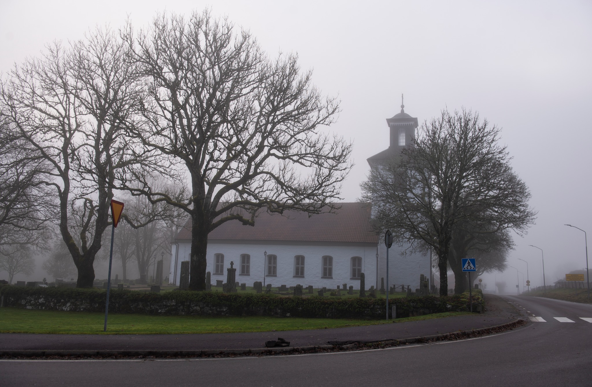

En pärla i södra Västergötland
En charmig tätort i Svenljunga kommun där historia möter modern livskvalitet.
Sexdrega är en mysig tätort belägen i Svenljunga kommun i Västra Götalands län. Med sina cirka 1250 invånare erbjuder vi en perfekt balans mellan lugn landsbygd och närhet till service och kommunikationer.
Vår by ligger i det historiska landskapet Kind, som en gång utgjorde gränsen mot Danmark. Detta spännande kulturarv präglar fortfarande området med fornlämningar, historiska kyrkobyggnader och vackra naturmiljöer.
Här finns Sexdrega skola med över 100 elever, lokal fotbollsklubb FC Lockryd, och en stark gemenskap som värnar om både tradition och framtid. Vi är stolta över vår levande bygd där alla känner alla.

Bilden av: Lars Christer Sundvall
Från vandringar i skog till bad i sjöar – här finns något för alla årstider.
Bara söder om Sexdrega ligger Hagalundssjöns härliga badplats. Perfect för sommarens svalka och familjeutflykter med bryggor och grillplats.
Utforska märkta vandringsleder genom skogslandskap, förbi sjöar och fornlämningar. Roasjö-området erbjuder fyra olika leder med varierande längd och svårighetsgrad.
Vår vackra kyrka uppförd 1810 är ett kulturhistoriskt monument värt att besöka. Upplev den välbevarade arkitekturen och den fridfulla atmosfären.
Cykla på den gamla järnvägsbanken genom vackra Sjuhärad-området. Passar perfekt för dagsutflykter med familjen eller längre cykelturer.
Området är rikt på fiskevatten. Hagalundssjön och andra närliggande sjöar erbjuder goda möjligheter för sportfiske året om.
Vår lokala fotbollsklubb där unga och gamla samlas. Följ med på match eller bli medlem – alla är välkomna att vara med!
Håll dig i form på vårt lokala gym. Modern utrustning och välkomnande atmosfär för alla träningsnivåer – från nybörjare till erfarna.
Allt du behöver för vardagen finns nära till hands i Sexdrega och närområdet.
Håll utkik efter kommande lokala evenemang, aktiviteter och sammankomster. Nedan ser du exempel på typiska händelser under året.
Gemensam städdag där vi fixar och piffar upp vår fina by inför våren. Samling vid bygdegården.
Traditionell påskmarknad med lokala hantverkare, bakverk och underhållning för hela familjen.
Fira vårens ankomst med majbrasa, dans kring majstången och gemensam grillfest vid Hagalundssjön.
Kom och heja på våra lokala fotbollshjältar under säsongen. Korv och fika finns att köpa.
Har du frågor om att bo, besöka eller etablera dig i Sexdrega? Hör av dig!